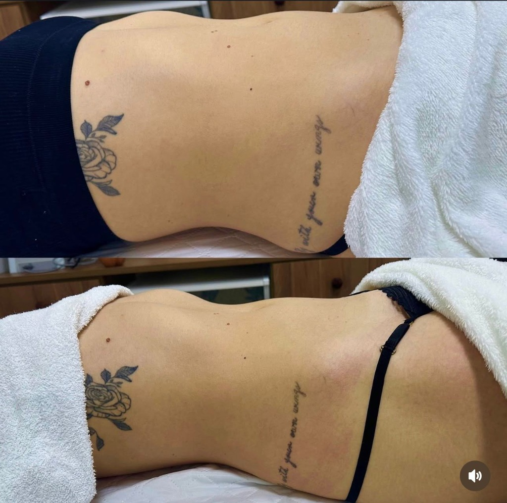

Resultados Reais
Resultados reais de protocolos corporais personalizados
 Crio Detox Slim
Crio Detox Slim

Detox Slim Drenagem Linfática
Drenagem Linfática
Protocolos corporais personalizados para redução de medidas, contorno e bem-estar
Resultados reais de protocolos corporais personalizados
Crio Detox Slim

Detox Slim
Drenagem Linfática
Procedimento corporal que associa manobras intensas a dermocosméticos profissionais de alta performance. Atua na mobilização do tecido adiposo, melhora do contorno corporal e redução de medidas, deixando o corpo mais definido, com sensação imediata de ativação e leveza.
Recurso utilizado dentro dos protocolos corporais para potencializar resultados. A sucção controlada atua na mobilização dos tecidos, melhora a resposta da pele aos ativos aplicados e contribui para melhora visível do aspecto da celulite e do contorno corporal.
Tratamento para costas acneicas completo e personalizado para cada tipo de pele. Associa vapor de ozônio, extração segura, alta frequência para ação bactericida e cicatrizante, LEDterapia conforme a necessidade da pele e dermocosméticos profissionais. Remove cravos e impurezas, controla oleosidade, previne acne e deixa a pele mais uniforme, iluminada e preparada para outros tratamentos.
Tecnologia avançada para redução de gordura localizada que atua através do resfriamento controlado por temperaturas negativas. Esse processo provoca a morte programada das células de gordura, que são eliminadas gradualmente pelo organismo. O resultado é redução de medidas, melhora significativa do contorno corporal e afinamento da área tratada, sem cirurgia.
Procedimento que utiliza correntes elétricas específicas para estimular a quebra da gordura localizada. Atua diretamente no metabolismo do tecido adiposo, favorecendo a redução de volumes e potencializando protocolos de remodelação corporal.
Procedimento estético avançado, não cirúrgico, que utiliza ativos lipolíticos associados a tecnologias para atuar diretamente na gordura localizada. Promove redução de volumes, remodelação corporal e melhora do contorno de forma progressiva e segura.
Tecnologia que utiliza ondas ultrassônicas para atingir as células de gordura e estimular a produção de colágeno. Atua tanto na redução de gordura localizada quanto na flacidez, melhorando firmeza, textura da pele e definição corporal.
Tecnologia de sucção mecânica que promove mobilização profunda dos tecidos. Auxilia na melhora do aspecto da celulite, na textura da pele e na potencialização dos resultados dos protocolos corporais associados.
Atendimento especializado que utiliza técnicas e recursos adequados para auxiliar na recuperação após cirurgias plásticas corporais. Atua na redução de edemas, prevenção de fibroses e organização do tecido, proporcionando recuperação mais confortável e resultados mais harmoniosos.
Protocolo corporal que associa tecnologias e dermocosméticos de alto padrão para promover redução de medidas, melhora do contorno corporal e diminuição da retenção de líquidos. Atua ativando o metabolismo local e potencializando a resposta estética do corpo, deixando a silhueta mais leve e definida.
Protocolo que utiliza eletroestimulação muscular para fortalecimento profundo do core. Atua na melhora da diástase abdominal, definição da região abdominal, fortalecimento muscular e estabilidade corporal, com resultados estéticos e funcionais.
Protocolo desenvolvido para tratamento da flacidez corporal. Associa tecnologias e ativos específicos que estimulam a produção de colágeno, promovendo pele mais firme, tonificada e com textura mais uniforme de forma progressiva.
Associação estratégica de tecnologias corporais focadas na gordura localizada e no contorno corporal. Atua na harmonização da silhueta, definição corporal e personalização total do tratamento conforme as necessidades de cada corpo.
Protocolo completo de harmonização corporal baseado na criolipólise, onde a gordura é tratada através do resfriamento por temperaturas negativas, promovendo a morte das células adiposas. O protocolo inclui preparo corporal antes da criolipólise para melhorar a resposta do tecido, sessões de pós-tratamento para potencializar os resultados e acompanhamento com orientações de hábitos, alimentação e suplementação. Os resultados são expressivos em cerca de 40 dias, com redução de medidas, afinamento da área tratada e melhora do contorno corporal, sem necessidade de inúmeras sessões.
Agende uma avaliação e receba um plano personalizado
Agendar Avaliação